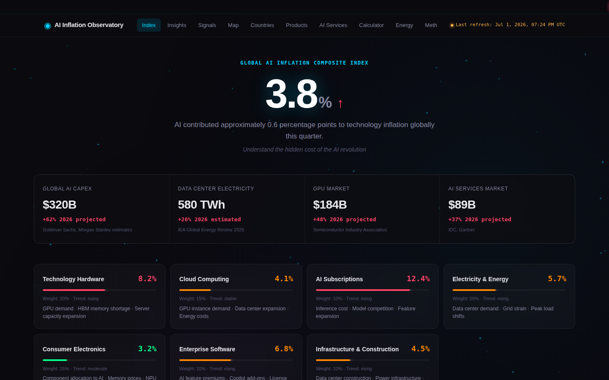
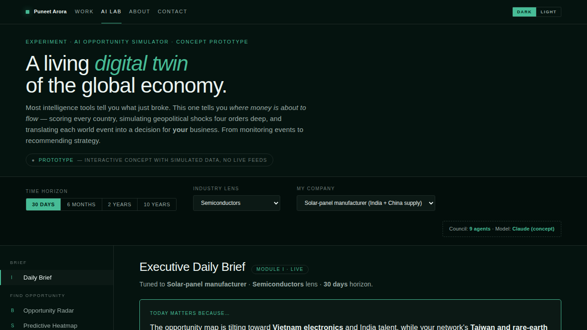
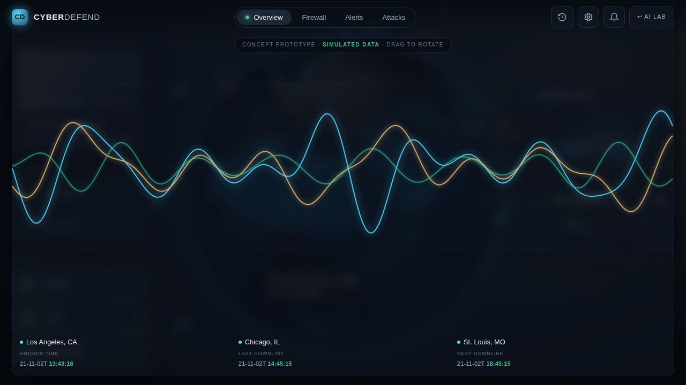

Problem
The India AI Impact Summit failed its attendees across 10 documented fault lines.
Not a portfolio — a working lab. Live tools, experiments still in motion, and the frameworks I've pulled out of them. Every card tells you the question I was chasing, the bet I made, and what it taught me. Not the tech. The thinking.
I don't build these to prove I can use AI. Everyone can use AI now. I build them to chase the questions that won't leave me alone — how memory should feel, when an agent should ask instead of act, what honest uncertainty looks like on a screen. Each one is me thinking out loud, in public.
Shipped tools you can open right now. Each one started as a hunch about how AI should behave, and got tested in the open.
A behavioural signal engine that learns from a 30-day rolling window — decay-weighted, recency over totality, across 60+ sources. What I learned: forgetting is a feature. Memory only earns trust when you can see it and time-bound it.
CO-STAR, RTF and Chain-of-Thought turned into instruments you pick up, not theory you memorise. What I learned: teams adopt AI when the scaffolding lives in the UI. Structure beats cleverness.
A GPT that argues about decisions and impact, not just what looks nice. What I learned: expertise, made explicit and testable, is what turns a chatbot into a critic worth listening to.

A composite index across 7 categories and 29 countries, refreshed every 24 hours from World Bank, FRED and IEA. What I learned: the right question — 'where does it hit you first?' — carries the product further than the dashboard does.
Paste a screen, get a scored trust audit with the guardrails built into the model. What I learned: trust is measurable — and people deserve to see the score, not just feel the manipulation.
A live generator plus 92 skills I built for Indian and global builders. What I learned: most of agentic UX is just lowering the cost of trying the next idea.
Prototypes I'm still learning from. Each one names the bet it's making and the insight it's chasing.

HypothesisAI-scored country rankings and four-order-deep shock sims turn macro noise into moves.
InsightPeople trust a forecast they can poke, override, and trace back to a cause.

HypothesisA live 3D ops picture with agent-run collision sims should invite steering, not spectating.
InsightControl and auditability are the rent you pay to trust automation.
HypothesisTriage every workload, route by cost, and send only the 5% that needs a human to a human.
InsightGovernance is a UX problem — every decision must be visible and defensible.
Deeper investigations — read as Problem → Hypothesis → Insight → What I learned.
When the same idea shows up in three experiments, I give it a name. These are the models I reach for again and again — the reusable part of the thinking.
A worksheet for deciding what an AI should remember, what it should let go of, and what it has no business storing without asking.
A shared language for how sure the model is — so the interface can say 'I'm guessing' instead of pretending.
When should an agent act, ask, or wait? A simple map from stakes and reversibility to the right amount of human control.
Patterns for how humans and several agents split the work, hand off cleanly, and stay accountable to each other.
The five stages of enterprise personalization — from one-size-fits-all to anticipatory — and how to tell which one you're really at.
Questions I'm still circling. Framed and argued — not yet built.
Versioned eval cases, side-by-side output diffs, and a rubric scorer that separates “structurally wrong” from “stylistically different.”
Nudges with the ethics built in — the mechanism, the honest examples, the anti-patterns, and how you'd measure each one.
An agent that critiques a screen the way a senior IC would — scored against your team's own rubric, for when the senior isn't in the room.